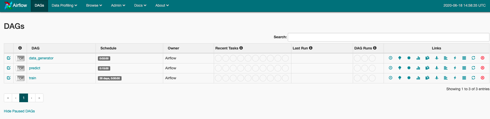

A l'issue de cette section, vous aurez découvert
- Découvrir l'orchestration avec Airflow,
- Savoir créer un
DAGet les scheduler, - Savoir créer des
tâches Airflow et les orchestrer, - Comprendre la gestion des
IOavec Airflow.
Le dossier dsin2/scripts contient des scripts d'entraînement et de prédiction pour notre cas d'usage de Machine Learning.
Nous allons désormais voir comment orchestrer ces tâches grâce à Airflow.
Revue de code avec les formateurs pour introduire les concepts de DAGs et de tâches dans le code.
Gestion des IO
Il n'est pas conseillé de passer de la donnée d'une tâche à l'autre dans un DAG Airflow.
Pour répondre à ce problème, nous avons décoré la fonction de prédiction avec
- une fonction permettant de lire un fichier en entrée,
- et d'écrire le résultat de la tâche dans un fichier en sortie.
A l'image des fonctions train_with_io et train du module train_and_predict.py dans /formation_indus_ds_avancee, nous avons créé une fonction predict_with_io qui soit utilisable par le DAG Airflow.
Les prédictions réalisées sont écrites dans 2 fichiers identiques:
- {date}.csv où la date est au format
%Y%m%d-%H%M%S, exemple: - latest.csv
- Modifier le fichier
/airflow/airflow.cfg- Changer la variable
dags_folderpour pointer sur/home/jovyan/dsin2/dags, - Changer la variable
load_examplesàFalse, - Changer la variable
dag_dir_list_intervalà30.
- Changer la variable
# Fichier /airflow/airflow.cfg
[core]
# The folder where your airflow pipelines live, most likely a
# subfolder in a code repository
# This path must be absolute
dags_folder = /airflow/dags
...
# Whether to load the examples that ship with Airflow.
load_examples = True
...
# How often (in seconds) to scan the DAGs directory for new files. Default to 5 minutes.
dag_dir_list_interval = 300
- Dans le
Launcher, lancer le serviceAirflow.

L'interface graphique d'Airflow devrait s'ouvrir dans un nouveau onglet.
- En ligne de commande dans l'environnement virtuel, lancer le scheduler avec
airflow scheduler -d.
L'interface graphique devrait désormais afficher 3 dags:

Afin de s'entraîner, il va nous falloir des données d'entraînement !
Elles ne sont pas versionnées dans ce repo. Télécharger les données avec la commande make dataset.
Les données sont désormais disponible dans dsin2/data/la-haute-borne-data-2017-2020.csv.
Pour lancer le dag train:
- activer le DAG en appuyant sur le bouton
ON/OFF(à gauche), - déclencher le DAG manuellement en cliquant sur l'icône
Play(sur la droite).
Inspecter le dag train en cliquant sur celui-ci, la tâche prepare_features devrait avoir commencé:

Compléter le DAG dags/predict pour intégrer la fonction predict_with_io dans un opérateur, avec les bons arguments.